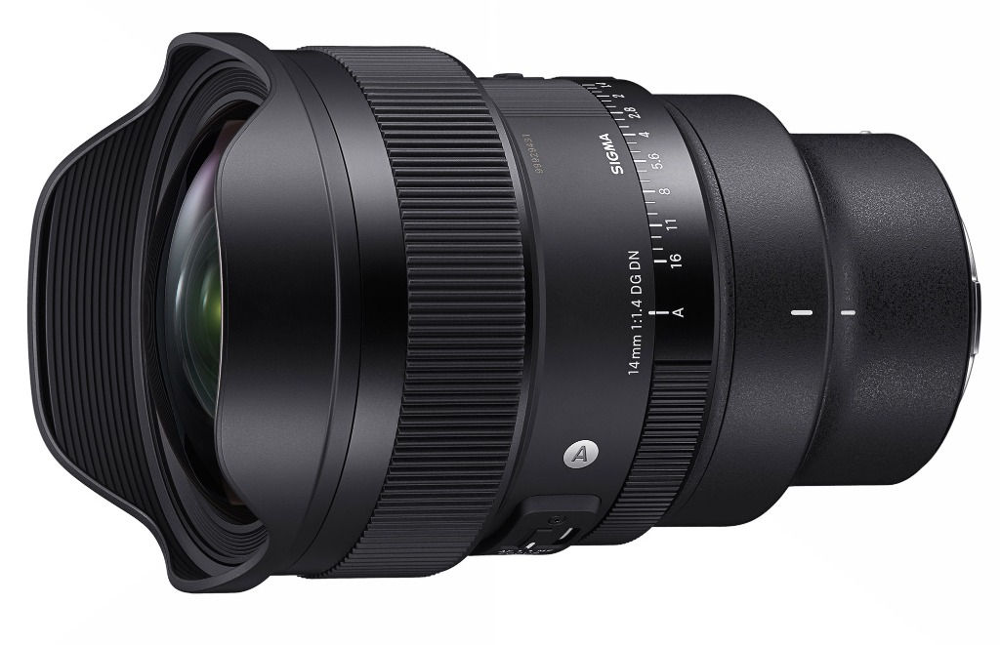
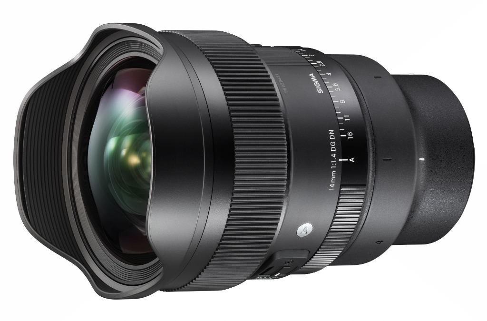
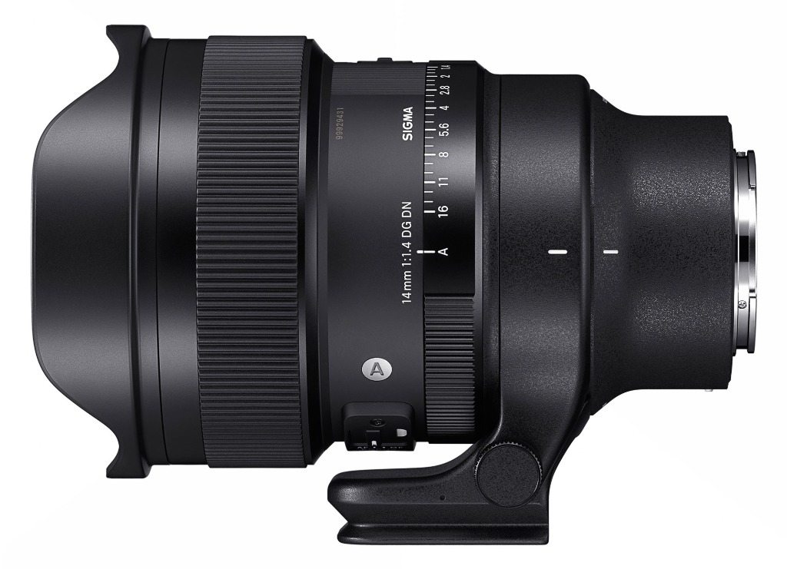

Sigma 14mm F1.4 DG DN Art
Introduzione
Era da tempo che desideravo iniziare a scrivere articoli anche sul mio sito e non soltanto per realtà esterne. Devo molto ai ragazzi di Toscana Photo Service e a Vanguard, che mi supportano fin dall'inizio di questo percorso, ma è arrivato il momento di raccontare anche qui la mia esperienza sul campo. E quale miglior modo per iniziare se non parlando del mio obiettivo preferito?
SIGMA ha inoltre avuto un ruolo cruciale nel mio percorso di crescita professionale: mi hanno guidato costantemente nello sviluppo sui canali social, dandomi tantissimi spunti, idee e soprattutto tantissime occasioni sul campo.
Perché proprio lui?
Negli ultimi anni ho avuto la fortuna di provare decine di obiettivi, appartenenti a marchi diversi. Alcuni mi hanno sorpreso, altri mi hanno convinto meno. Alla fine, però, ce n'è uno che è rimasto stabilmente nello zaino: il Sigma 14mm F1.4 DG DN Art.

Perché un 14 mm?
In tanti mi chiedono perché abbia scelto proprio un 14 mm invece di un più classico 16-35 o di un 20 mm luminoso. La risposta è semplice: fotografo paesaggio e astrofotografia ambientata. Voglio che il cielo sia protagonista, ma senza rinunciare al paesaggio che lo sostiene. Quei 2 o 3 millimetri in meno, sulla carta sembrano pochi, ma sul campo fanno una differenza enorme nella composizione.
📊 Tabella: Confronto Angolo di Campo
| Focale | Angolo di Campo (Diagonale) | Uso Principale sul Campo |
|---|---|---|
| 14 mm | 114.2° | Astrofotografia ambientata imponente, cieli stellati a 360° e primo piano ravvicinato |
| 16 mm | 107.0° | Grandangolare classico da paesaggio montano e marino |
| 20 mm | 94.5° | Grandangolare moderato per inquadrature più strette e controllate |
Perché si compra un 14 mm F1.4?
Non si acquista per ottenere uno sfocato pronunciato: a questa focale non è la sua vocazione. Si sceglie per raccogliere più luce possibile. Questo significa poter lavorare con ISO più contenuti oppure ridurre drasticamente i tempi di esposizione quando serve, ad esempio durante un'aurora boreale, preservandone struttura e movimento.

Prestazioni notturne
Già a tutta apertura il livello di nitidezza è sorprendente e molto uniforme. Il coma è presente a f/1.4, come è naturale aspettarsi da un grandangolare così estremo, ma è molto ben controllato e facilmente correggibile con gli strumenti di post-produzione moderni. Con un astroinseguitore la luminosità dell'obiettivo permette di ottenere file estremamente puliti, riducendo sensibilmente gli ISO rispetto a ottiche meno luminose.

Prestazioni diurne
Oltre alla fotografia notturna, questo obiettivo offre ottime prestazioni anche di giorno. La profondità di campo è eccellente già a f/5.6 e, in molte situazioni, anche f/2.8 consente di ottenere un fotogramma perfettamente leggibile da primo piano a infinito. Un altro aspetto che ho apprezzato molto è la resa della stella del sole: già a f/11 è estremamente pulita, senza costringere a realizzare uno secondo scatto dedicato esclusivamente alla sunstar, pratica spesso necessaria con altre ottiche. Anche il lens flare è molto gradevole esteticamente e, quando non lo desidero, risulta semplice da eliminare in post-produzione, evitando il classico scatto con il pollice davanti alla lente per ripulire gli artefatti.

Diffrazione
Essendo un obiettivo f/1.4, la diffrazione compare prima rispetto a ottiche meno luminose. Fino a f/11 il rendimento è praticamente impeccabile; tra f/11 e f/14 il calo è minimo e difficilmente percepibile. Anche a f/16 il risultato rimane assolutamente utilizzabile: un leggero sharpening è sufficiente se si ricerca la massima perfezione. Personalmente, quando desidero tempi più lunghi, preferisco mantenere il diaframma nella fascia ottimale e utilizzare un filtro ND.
Pregi e compromessi
Peso e dimensioni sono importanti, ma il collare Arca Swiss integrato rappresenta un vantaggio concreto. Pur non sostituendo una vera testa nodale, è sufficientemente vicino al punto nodale da consentire la realizzazione di panoramiche con un parallasse molto contenuto, facilmente gestibile da PTGui o Lightroom. L'assenza della filettatura frontale limita i filtri tradizionali, ma la compatibilità con filtri posteriori e astronomici è un plus notevole.

✅ PRO
- Luminosità f/1.4 senza eguali per astrofotografia
- Nitidezza uniforme da centro a bordo a tutta apertura
- Collare Arca Swiss integrato ideale per bilanciamento e panoramiche
- Portafiltri posteriore per filtri gelatina e astronomici
❌ CONTRO
- Peso ed ingombro significativi nello zaino da trekking
- Niente filtri frontali a vite a causa della lente frontale a bulbo
Conclusioni
Dopo tre anni di utilizzo continuo posso dire che il Sigma 14mm F1.4 è uno degli obiettivi che ha influenzato maggiormente il mio modo di fotografare. Non è perfetto: è grande, pesante e richiede qualche compromesso. Ma ogni volta che mi trovo sotto un cielo stellato, davanti a un'aurora boreale o semplicemente davanti a un paesaggio che merita di essere raccontato nella sua interezza, mi ricorda perché continua ad avere un posto fisso nel mio zaino.
Se vuoi provarlo sul campo, durante i miei workshop sarà un piacere fartelo utilizzare direttamente. Credo che il modo migliore per capire un'attrezzatura non sia leggere una scheda tecnica, ma usarla davanti a un panorama che lascia senza parole.